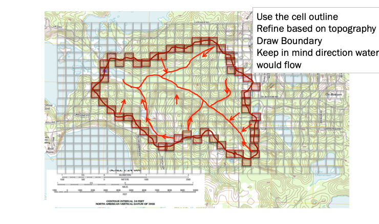

Watersheds¶
Some definitions of a watershed include:
Topographic area that collects and discharges surface streamflow through one outlet or mouth (pour point)
The area on the surface of the Earth that drains to a specific location
In groundwater a similar concept is called a groundwater basin – only the boundaries can move depending on relative rates of recharge and discharge
The topographic definition omits that there could be subsurface sewer systems that can cross topographic boundaries.
It’s a big deal in urban areas.
[insert some images]
Watershed Delineation¶
Identifies the boundaries of our hydrologic unit / area of study.
Need to interpret topographic maps (or DEM/DTM) to construct the boundary
Read “How to …” on server (check the reading list below!)
By-hand steps to delineate a watershed¶
Locate a pour point/point of interest
Superimpose a grid over the study area – used to assign average elevations for demarking the boundary
Trace/outline the main path of the stream that you want to examine that flows to the pour point
Trace all perennial or influential tributaries
Locate the lowest point/outlet of the main stem and work uphill to identify the ridges and hill tops that divide the water from flowing into separate watersheds
When in doubt, consider, where a drop of rain would go on different parts of study region
Locate a pour point/point of interest¶

Superimpose a grid over the study area¶
Used to assign average elevations for demarking the boundary, so the grid needs to be small enough to capture meaningful elevation change, but big enough that you can complete the task in your lifetime.

Estimate Cell Elevations¶
Estimate the average elevations in each cell. Trace/outline the main path of the stream that you want to examine that flows to the pour point. Trace all perennial or influential tributaries Locate the lowest point/outlet of the main stem and work uphill to identify the ridges and hill tops that divide the water from flowing into separate watersheds

Draw Boundary¶
Once the high points are identified, connect them and draw the watershed boundary. You can now make measurements to determine area, lengths, and slopes.

Automated¶
Automated delineation essentially replicates these steps in a computer program. ArcGIS, QGIS and similar tools can perform a raster-based cell-by-cell flow accumulation calculation and when the “upstream” cell count gets smaller than some threshold, the program declares that to be a high point. And draws the boundary.
The automated tools are pretty good; fast; and less prone to interpretation - but you have to have the software and know how to use it.
Manual methods and automated methods produce comparable results, but for large areas the automated methods are much faster. Heitmuller et. al. 2006
Stream Stats Tool¶
An on-line tool for use in many states is StreamStats. A good demonstration is to select a stream near Lawton Oklahoma and generate a watershed report.
References¶
Florida Delineation Training Watershed (png) Right-Click “Save As…”
Texas Delineation Training Watershed (png) Right-Click “Save As…”
{kind=link}
{kind=link}